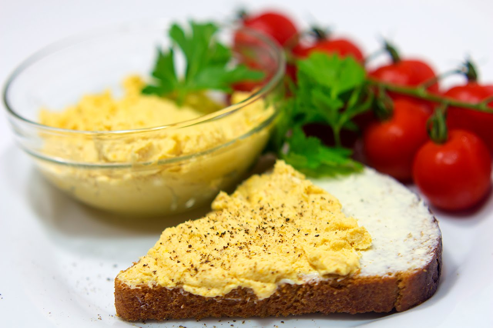

Паштет из курицы
Потрясающий паштет! На завтрак кусочек хрустящего багета с нежным паштетом и горячим чаем — прекрасное начало дня. Вкус паштета можно разнообразить, добавить любимые специи, грибы и т.д. Или, как в рецепте, на паштет выложить маринованные огурцы, вяленые томаты или вареные яйца. Из указанного количества ингредиентов получается 500–700 г.
Ингридиенты:

800 г курицы
300 г лука (две луковицы по 150 г)
300 г моркови (2 моркови по 150 г)
50–100 мл сливок 10–15%
3–4 лавровых листа
10 горошин черного перца
растительное масло
соль
перец
чеснок
маринованные огурцы
вяленые томаты
перепелиные (или куриные) яйца
Приготовление
багет
Одну морковь и одну луковицу крупно нарезать.
Курицу залить водой.
Добавить нарезанные морковь, лук.
Добавить лавровый лист, перец горошком, посолить.
Варить до готовности (около 35–40 минут).
Остудить.
Оставшуюся луковицу мелко нарезать.
Оставшуюся морковь натереть на средней терке.
На растительном масле обжарить лук.
Добавить морковь, обжарить.
Отделить мясо от костей.
Мясо положить в блендер.
Добавить сливки.
Измельчить (если необходимо, можно еще добавить сливки).
Добавить обжаренные лук и морковь.
Измельчить.
Если необходимо, посолить.
Багет нарезать.
Выложить в форму для запекания.
Сбрызнуть растительным маслом.
Поставить в духовку.
Запекать при температуре 180 градусов до золотистого цвета.
Готовые теплые кусочки багета натереть чесноком.
На багет выложить паштет.
На паштет выложить нарезанные огурцы, помидоры, яйца.